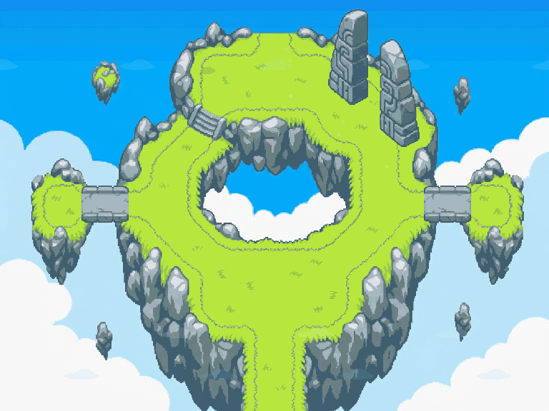
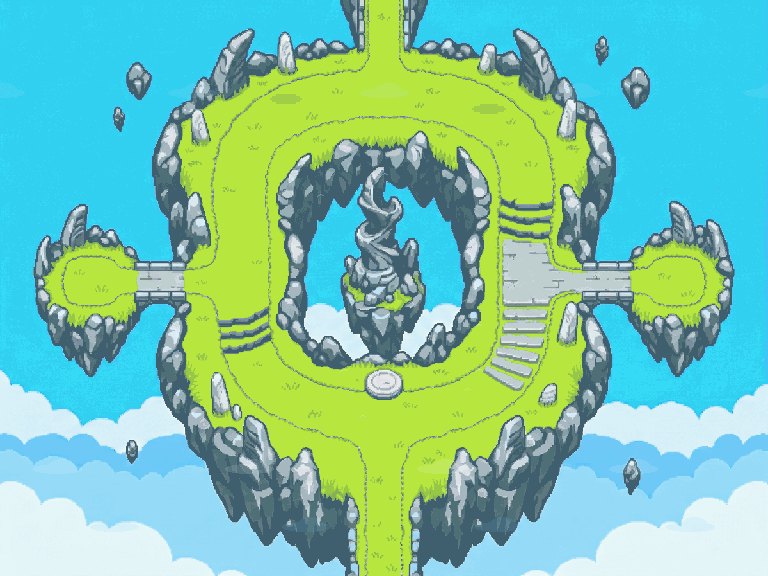
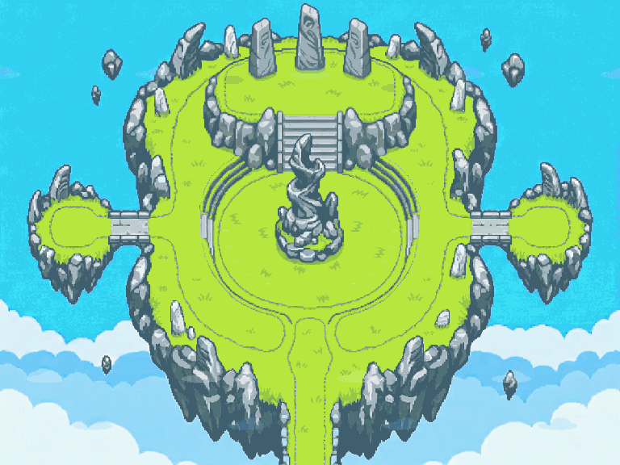

1 · Entrée
EIZ1 — Portail des Alizés
Arrivée sud, bifurcation autour du puits de ciel, deux belvédères et seuil du portail.
Trois cartes autonomes 4:3, multicalques et animées : une entrée, la Couronne des Vents comme chemin, puis un sanctuaire final. Référence visuelle : Final Island de Pokémon Mystery Dungeon: Red Rescue Team.

Arrivée sud, bifurcation autour du puits de ciel, deux belvédères et seuil du portail.

Traversée sud–nord par deux branches autour du monolithe, avec deux îlots latéraux.

Arène ovale, autel central bloqué, routes en croissant, observatoires et objectif fermé.
art_approved: false · runtime_tested: false. Aucun warp de liaison n’est configuré.